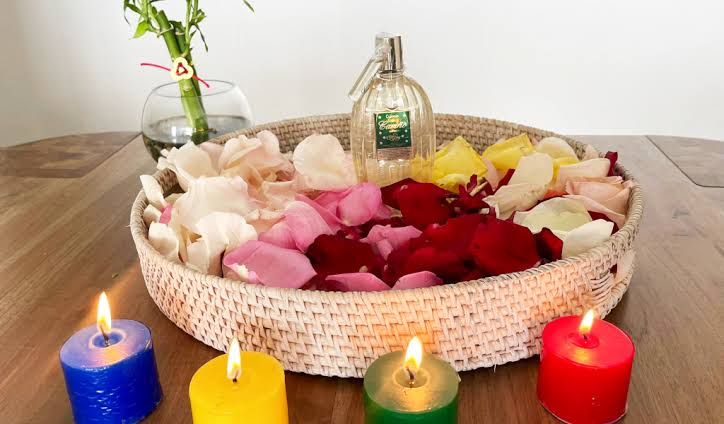
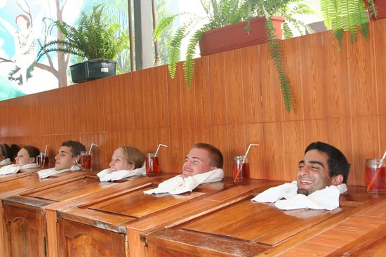
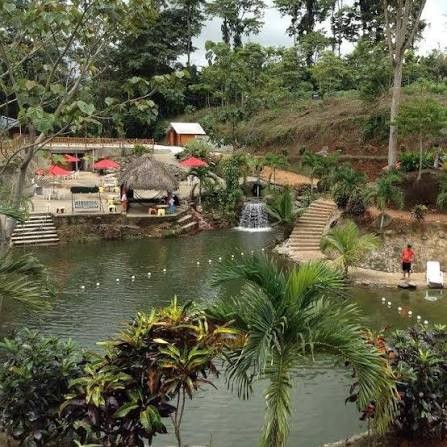

¿Quiénes somos?
MEDY ANCES es una microempresa familiar dedicada a la medicina ancestral, la comercialización de productos naturales, esotéricos y de catálogo, así como a la prestación de servicios tradicionales y consultas personalizadas.
Su nombre proviene de la expresión Medicina Ancestral, reflejando su identidad vinculada con los conocimientos tradicionales, la herbolaria y el bienestar holístico.
La microempresa se encuentra ubicada en Santo Domingo, Ecuador, en la vía a Quito, km 4.5, sector El Paraíso.
Nuestra historia
MEDY ANCES inició sus actividades comerciales en el año 2017, bajo la iniciativa de su fundador, el señor Favian Encalada.
El emprendimiento surgió ante la necesidad de ofrecer a la comunidad un espacio dedicado a la atención espiritual, las terapias alternativas y la venta de productos naturales.
Durante sus primeros años, la administración de clientes, citas, inventarios y pagos se realizaba mediante registros manuales en cuadernos físicos.
Con el transcurso del tiempo, la microempresa ha buscado mejorar la organización de sus actividades e incorporar herramientas digitales para fortalecer su presencia comercial.
Actualmente, MEDY ANCES mantiene su carácter familiar y continúa ofreciendo una atención cercana, directa y personalizada.
Nuestra misión
Brindar servicios de atención espiritual y terapias alternativas, acompañados de la comercialización de productos naturales y esotéricos, mediante una atención personalizada, responsable y respetuosa, orientada a satisfacer las necesidades de nuestros clientes.
Nuestra visión
Consolidarnos como una microempresa reconocida en la provincia de Santo Domingo de los Tsáchilas, fortaleciendo nuestra presencia digital, modernizando los procesos administrativos y ampliando nuestros servicios y productos, sin perder nuestra identidad familiar y tradicional.
Nuestros valores
Nuestra actividad se fundamenta en principios que permiten mantener una relación cercana y responsable con los clientes.
- Honestidad: ofrecer información clara y transparente.
- Confianza: mantener relaciones cercanas con nuestros clientes.
- Responsabilidad: cumplir los compromisos y las citas programadas.
- Respeto: brindar una atención cordial a todas las personas.
- Discreción: manejar responsablemente la información de los clientes.
Nuestras prácticas tradicionales
MEDY ANCES conserva diferentes prácticas relacionadas con las costumbres y creencias de la medicina ancestral.
Baños de florecimiento
Forman parte de las prácticas tradicionales de atención espiritual del establecimiento.

Baños de Santo Reyes
Constituyen una de las actividades tradicionales que ofrece la microempresa.

Visitas a lagunas
Se realizan actividades tradicionales relacionadas con las creencias de levantamiento espiritual.

Nuestro fundador
Favian Encalada
El señor Favian Encalada es el fundador y propietario de MEDY ANCES desde 2017.
Es responsable de la administración general del establecimiento, la supervisión de las actividades, la atención de consultas y la organización de los servicios.
Su labor se caracteriza por mantener una atención familiar, directa y personalizada.
Nuestros objetivos
- Mejorar continuamente la atención al cliente.
- Fortalecer la organización administrativa del negocio.
- Optimizar el control de productos e inventarios.
- Incrementar la presencia digital de la microempresa.
- Mantener las prácticas tradicionales que forman parte de su identidad.